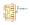
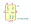
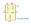
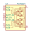
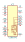
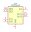

| Symbol |
Description |
AAT4610BIGV-1-T1 | Description: Current Limited Load Switch, SOT-23-5
Keys: Limit USB Active High
Datasheet: http://www.skyworksinc.com/uploads/documents/201937A.pdf |
AAT4610BIGV-T1 | Description: Current Limited Load Switch, SOT-23-5
Keys: Limit USB Active Low
Datasheet: http://www.skyworksinc.com/uploads/documents/201937A.pdf |
AAT4616IGV-1-T1 | Description: Adjustable Current Limited Load Switch, SOT-23-5
Keys: Limit USB Active High
Datasheet: http://www.skyworksinc.com/uploads/documents/AAT4616_201940E.pdf |
AAT4616IGV-T1 | Description: Adjustable Current Limited Load Switch, SOT-23-5
Keys: Limit USB Active Low
Datasheet: http://www.skyworksinc.com/uploads/documents/AAT4616_201940E.pdf |
AP2161W | Description: Current limited power switch, single channel, SOT-23-5
Keys: Limit USB Active Low
Datasheet: https://www.diodes.com/assets/Datasheets/AP2161.pdf |
AP2171W | Description: Current limited power switch, single channel, SOT-23-5
Keys: Limit USB Active High
Datasheet: https://www.diodes.com/assets/Datasheets/AP2161.pdf |
AP22804AW5 | Description: Current limited 2.5A power switch, single channel, SOT-23-5
Keys: Limit USB Active High
Datasheet: https://www.diodes.com/assets/Datasheets/AP22804_14.pdf |
AP22804BW5 | Description: Current limited 2.5A power switch, single channel, SOT-23-5
Keys: Limit USB Active Low
Datasheet: https://www.diodes.com/assets/Datasheets/AP22804_14.pdf |
AP22814AW5 | Description: Current limited 3A power switch, single channel, SOT-23-5
Keys: Limit USB Active High
Datasheet: https://www.diodes.com/assets/Datasheets/AP22804_14.pdf |
AP22814BW5 | Description: Current limited 3A power switch, single channel, SOT-23-5
Keys: Limit USB Active Low
Datasheet: https://www.diodes.com/assets/Datasheets/AP22804_14.pdf |
AUIPS1041R | Description: Intelligent Power Low Side Switch, 39V, 4.5A, DPAK-5L
Keys: low side switch
Datasheet: https://www.infineon.com/dgdl/Infineon-AUIPS1041-DS-v01_00-EN.pdf?fileId=5546d4625a888733015aae14a0524c63 |
AUIPS1042G | Description: Dual Channel Intelligent Power Low Side Switch, 39V, 4.5A, SOIC-8
Keys: dual low side switch
Datasheet: https://www.infineon.com/dgdl/Infineon-AUIPS1041-DS-v01_00-EN.pdf?fileId=5546d4625a888733015aae14a0524c63 |
AUIPS1051L | Description: Intelligent Power Low Side Switch, 39V, 2.8A, SOT-223
Keys: low side switch
Datasheet: https://www.infineon.com/dgdl/auips1051.pdf?fileId=5546d462533600a4015355a4710712fc |
AUIPS1052G | Description: Dual Channel Intelligent Power Low Side Switch, 39V, 2.8A, SOIC-8
Keys: dual low side switch
Datasheet: https://www.infineon.com/dgdl/auips1051.pdf?fileId=5546d462533600a4015355a4710712fc |
AUIPS2031R | Description: Intelligent Power Low Side Switch, 68V, 10A, DPAK-5L
Keys: low side switch
Datasheet: https://www.infineon.com/dgdl/Infineon-AUIPS2031R-DS-v01_00-EN.pdf?fileId=5546d4625a888733015aae1488334c5c |
AUIPS2041L | Description: Intelligent Power Low Side Switch, 68V, 5A, SOT-223
Keys: low side switch
Datasheet: https://www.infineon.com/dgdl/Infineon-AUIPS2041-DS-v01_00-EN.pdf?fileId=5546d4625a888733015aae147a9d4c57 |
AUIPS2051L | Description: Intelligent Power Low Side Switch, 70V, 1.8A, SOT-223
Keys: low side switch
Datasheet: https://www.infineon.com/dgdl/Infineon-AUIPS2052G-DS-v01_00-EN.pdf?fileId=5546d4625a888733015aae0b6fb04c51 |
AUIPS2052G | Description: Dual Channel Intelligent Power Low Side Switch, 70V, 1.8A, SOIC-8
Keys: dual low side switch
Datasheet: https://www.infineon.com/dgdl/Infineon-AUIPS2052G-DS-v01_00-EN.pdf?fileId=5546d4625a888733015aae0b6fb04c51 |
AUIPS6011R | Description: Intelligent Power High Side Switch, 39V, 60A, DPAK-5L
Keys: high side switch
Datasheet: https://www.infineon.com/dgdl/auips6011.pdf?fileId=5546d462533600a4015355a787bf1309 |
AUIPS6031R | Description: Intelligent Power High Side Switch, 39V, 16A, DPAK-5L
Keys: high side switch
Datasheet: https://www.infineon.com/dgdl/auips6031.pdf?fileId=5546d462533600a4015355a797f51311 |
AUIPS6041G | Description: Intelligent Power High Side Switch, 39V, 7A, SOIC-8
Keys: high side switch
Datasheet: https://www.infineon.com/dgdl/auips6041.pdf?fileId=5546d462533600a4015355a7a0251315 |
AUIPS6044G | Description: Intelligent Power High Side Switch, 39V, 7A, SOIC-28W
Keys: high side switch
Datasheet: https://www.infineon.com/dgdl/auips6044g.pdf?fileId=5546d462533600a4015355a7a8e4131a |
AUIPS7081R | Description: Intelligent Power High Side Switch, 70V, 5A, DPAK-5L
Keys: high side switch
Datasheet: https://www.infineon.com/dgdl/auips7081.pdf?fileId=5546d462533600a4015355a7b8d5131e |
AUIPS7081S | Description: Intelligent Power High Side Switch, 70V, 5A, D2PAK-5L
Keys: high side switch
Datasheet: https://www.infineon.com/dgdl/auips7081.pdf?fileId=5546d462533600a4015355a7b8d5131e |
AUIPS7091G | Description: Intelligent Power High Side Switch, 70V, 5A, SOIC-8
Keys: high side switch
Datasheet: https://www.infineon.com/dgdl/auips7091.pdf?fileId=5546d462533600a4015355a7c0d21322 |
AUIPS7111S | Description: Current Sense High Side Switch, 65V, 30A, D2PAK-5L
Keys: high side switch
Datasheet: https://www.infineon.com/dgdl/auips7111s.pdf?fileId=5546d462533600a4015355a7c94e1326 |
AUIPS7121R | Description: Current Sense High Side Switch, 65V, 50A, DPAK-5L
Keys: high side switch
Datasheet: http://www.infineon.com/dgdl/auips7121.pdf?fileId=5546d462533600a4015355a7d1721328 |
AUIPS7125R | Description: Current Sense High Side Switch, 65V, 50A, DPAK-5L
Keys: high side switch
Datasheet: https://www.infineon.com/dgdl/auips7125.pdf?fileId=5546d462533600a4015355a7d96a132a |
AUIPS7141R | Description: Current Sense High Side Switch, 65V, 20A, DPAK-5L
Keys: high side switch
Datasheet: https://www.infineon.com/dgdl/auips7141.pdf?fileId=5546d462533600a4015355a7e126132c |
AUIPS7142G | Description: Dual Channels Current Sense High Side Switch, 65V, 20A, SOIC-16W
Keys: dual high side switch
Datasheet: https://www.infineon.com/dgdl/auips7142g.pdf?fileId=5546d462533600a4015355a7ef451330 |
AUIPS71451G | Description: Current Sense High Side Switch, 65V, 4A, SOIC-8
Keys: high side switch
Datasheet: https://www.infineon.com/dgdl/auips71451g.pdf?fileId=5546d462533600a4015355a7f7461332 |
AUIPS7145R | Description: Current Sense High Side Switch, 65V, 20A, DPAK-5L
Keys: high side switch
Datasheet: https://www.infineon.com/dgdl/auips7145r.pdf?fileId=5546d462533600a4015355a7ff1a1334 |
AUIPS72211R | Description: Low EMI PWM Intelligent Power High Side Switch, 75V, 20A, DPAK-5L
Keys: high side switch
Datasheet: https://www.infineon.com/dgdl/Infineon-AUIPS72211R-DS-v01_10-EN.pdf?fileId=5546d4625a888733015aad6673cb4beb |
AUIPS7221R | Description: PWM Intelligent Power High Side Switch, 75V, 25A, DPAK-5L
Keys: high side switch
Datasheet: https://www.infineon.com/dgdl/auips7221r.pdf?fileId=5546d462533600a4015355a80e761338 |
AUIR3313S | Description: Programmable Current Sense High Side Switch, 32V, 90A, D2PAK-5L
Keys: high side switch
Datasheet: https://www.infineon.com/dgdl/auir3313.pdf?fileId=5546d462533600a4015355a83e2d1347 |
AUIR3314S | Description: Programmable Current Sense High Side Switch, 32V, 58A, D2PAK-5L
Keys: high side switch
Datasheet: https://www.infineon.com/dgdl/auir3314.pdf?fileId=5546d462533600a4015355a846b8134a |
AUIR3315S | Description: Programmable Current Sense High Side Switch, 32V, 30A, D2PAK-5L
Keys: high side switch
Datasheet: https://www.infineon.com/dgdl/auir3315.pdf?fileId=5546d462533600a4015355a84eda134d |
AUIR3316S | Description: Low EMI Current Sense High Side Switch, 26V, 90A, D2PAK-5L
Keys: high side switch
Datasheet: https://www.infineon.com/dgdl/auir3316.pdf?fileId=5546d462533600a4015355a856f41350 |
AUIR3320S | Description: Low EMI Current Sense High Side Switch, 26V, 55A, D2PAK-5L
Keys: high side switch
Datasheet: https://www.infineon.com/dgdl/auir3320s.pdf?fileId=5546d462533600a4015355a867d01356 |
AUIR33402S | Description: Protected High Side Switch, 18V, 33A, D2PAK-7L
Keys: high side switch
Datasheet: https://www.infineon.com/dgdl/auir33402s.pdf?fileId=5546d462533600a4015355a88074135c |
BD48ExxG | Description: Standard CMOS Voltage Detector IC, Open Drain Output, SSOP5
Keys: voltage detector open drain SSOP5
Datasheet: https://www.rohm.de/datasheet/BD4830FVE/bd48xxg-e |
BD48KxxG | Description: Standard CMOS Voltage Detector IC, Open Drain Output, SSOP3(1pin GND)
Keys: voltage detector open drain SSOP3
Datasheet: https://www.rohm.de/datasheet/BD4830FVE/bd48xxg-e |
BD48LxxG | Description: Standard CMOS Voltage Detector IC, Open Drain Output, SSOP3(3pin GND)
Keys: voltage detector open drain SSOP3
Datasheet: https://www.rohm.de/datasheet/BD4830FVE/bd48xxg-e |
BD48xxFVE | Description: Standard CMOS Voltage Detector IC, Open Drain Output, VSOF5
Keys: voltage detector open drain VSOF5
Datasheet: https://www.rohm.de/datasheet/BD4830FVE/bd48xxg-e |
BD49ExxG | Description: Standard CMOS Voltage Detector IC, CMOS Output, SSOP5
Keys: voltage detector cmos SSOP5
Datasheet: https://www.rohm.de/datasheet/BD4830FVE/bd48xxg-e |
BD49KxxG | Description: Standard CMOS Voltage Detector IC, CMOS Output, SSOP3(1pin GND)
Keys: voltage detector cmos SSOP3
Datasheet: https://www.rohm.de/datasheet/BD4830FVE/bd48xxg-e |
BD49LxxG | Description: Standard CMOS Voltage Detector IC, CMOS Output, SSOP3(3pin GND)
Keys: voltage detector cmos SSOP3
Datasheet: https://www.rohm.de/datasheet/BD4830FVE/bd48xxg-e |
BD49xxFVE | Description: Standard CMOS Voltage Detector IC, CMOS Output, VSOF5
Keys: voltage detector cmos VSOF5
Datasheet: https://www.rohm.de/datasheet/BD4830FVE/bd48xxg-e |
BQ24230RGT | Description: USB-Friendly Lithium-Ion Battery Charger And Power-Path Management IC, VQFN-16
Keys: Lithium-ion battery charger
Datasheet: http://www.ti.com/cn/lit/ds/symlink/bq24230.pdf |

BTN8982TA | Description: High Current PN Half Bridge, TO-263-7
Keys: half bridge for motor drive applications
Datasheet: https://www.infineon.com/dgdl/Infineon-BTN8982TA-DS-v01_00-EN.pdf?fileId=db3a30433fa9412f013fbe32289b7c17 |
BTS40K2-1EJC | Description: Smart High-Side Power Switch, PROFET, Single, 200mOhm, 1.5A, 36V, DSO-8
Keys: infineon power switch
Datasheet: http://www.infineon.com/dgdl/Infineon-BTS40K2-1EJC-DS-v01_00-EN.pdf?fileId=5546d462518ffd85015254ee4e601f99 |
BTS443P | Description: Smart High-Side Power Switch, PROFET, Single, 16mOhm, 7.6A, 36V, TO252-5
Keys: infineon power switch
Datasheet: http://www.infineon.com/dgdl/Infineon-BTS443P-DS-v01_00-EN.pdf?fileId=5546d4625a888733015aa9afbc5035d5 |
BTS50010-1TAD | Description: Smart High-Side Power Switch, PROFET, Single, 1mOhm, 40A, 18V, TO-263-7
Keys: BTS50010 PROFET
Datasheet: https://www.infineon.com/dgdl/Infineon-BTS50010-1TAD-DS-v01_00-EN.pdf?fileId=5546d462576f34750157c38810ca55cd |
BTS50055-1TMA | Description: Smart High-Side Power Switch, PROFET, Single, 6mOhm, 70A, 34V, TO220-7
Keys: BTS50055 PROFET
Datasheet: http://www.infineon.com/dgdl/Infineon-BTS50055-1TMA-DS-v01_00-EN.pdf?fileId=5546d4625a888733015aa9b00de935ed |
BTS50055-1TMC | Description: Smart High-Side Power Switch, PROFET, Single, 6mOhm, 17A, 34V, TO220-7
Keys: BTS50055 PROFET
Datasheet: https://www.infineon.com/dgdl/Infineon-BTS50055-1TMC-DS-v01_00-EN.pdf?fileId=5546d4625a888733015aa9b0007235e9 |
BTS50080-1TEA | Description: Smart High-Side Power Switch, PROFET, Single, 16mOhm, 10A, 30V, TO252-5
Keys: infineon power switch
Datasheet: http://www.infineon.com/dgdl/Infineon-BTS50080-1TEA-DS-v01_00-EN.pdf?fileId=5546d4625a888733015aa435f2d2115b |
BTS50080-1TEB | Description: Smart High-Side Power Switch, PROFET, Single, 16mOhm, 10A, 30V, TO252-5
Keys: infineon power switch
Datasheet: https://www.infineon.com/dgdl/Infineon-BTS50080-1TEB-DS-v01_00-EN.pdf?fileId=5546d4625a888733015aa435e5601157 |
BTS50080-1TMA | Description: Smart High-Side Power Switch, PROFET, Single, 16mOhm, 9.5A, 38V, TO220-7
Keys: BTS50080 PROFET
Datasheet: https://www.infineon.com/dgdl/Infineon-BTS50080-1TMA-DS-v01_00-EN.pdf?fileId=5546d4625a888733015aa435d7fe1153 |
BTS50080-1TMC | Description: Smart High-Side Power Switch, PROFET, Single, 16mOhm, 9.5A, 38V, TO220-7
Keys: BTS50080 PROFET
Datasheet: https://www.infineon.com/dgdl/Infineon-BTS50080_1TMC-DS-v01_00-en.pdf?fileId=db3a3043266237920126992737c951ee |
BTS50085-1TMA | Description: Smart High-Side Power Switch, PROFET, Single, 9mOhm, 11.1A, 58V, TO220-7
Keys: BTS50085 PROFET
Datasheet: https://www.infineon.com/dgdl/Infineon-BTS50085-1TMA-DS-v01_00-EN.pdf?fileId=5546d4625a888733015aa435bccd114b |
BTS5012SDA | Description: Smart High-Side Power Switch, PROFET, Single, 24mOhm, 6.5A, 20V, TO252-5
Keys: infineon power switch
Datasheet: http://www.infineon.com/dgdl/Infineon-BTS5012SDA-DS-v01_01-en.pdf?fileId=db3a30431d8a6b3c011db95c6eba237d |
BTS5014SDA | Description: Smart High-Side Power Switch, PROFET, Single, 28mOhm, 6A, 20V, TO252-5
Keys: infineon power switch
Datasheet: http://www.infineon.com/dgdl/Infineon-BTS5014SDA-DS-v01_01-EN.pdf?fileId=5546d4625a888733015aa42c708e1142 |
BTS5016SDA | Description: Smart High-Side Power Switch, PROFET, Single, 32mOhm, 5.5A, 20V, TO252-5
Keys: infineon power switch
Datasheet: http://www.infineon.com/dgdl/Infineon-BTS5016SDA-DS-v01_01-EN.pdf?fileId=5546d4625a888733015aa41a6c38112d |
BTS5030-1EJA | Description: Smart High-Side Power Switch, PROFET, Single, 30mOhm, 5A, 28V, DSO-8
Keys: infineon power switch
Datasheet: http://www.infineon.com/dgdl/Infineon-BTS5030-1EJA-DS-v02_20-EN.pdf?fileId=5546d46259d9a4bf015a84f3e686758a |
BTS5045-1EJA | Description: Smart High-Side Power Switch, PROFET, Single, 45mOhm, 4A, 28V, DSO-8
Keys: infineon power switch
Datasheet: http://www.infineon.com/dgdl/Infineon-BTS5045-1EJA-DS-v02_02-EN.pdf?fileId=5546d4625a888733015aa411125b1069 |
BTS5090-1EJA | Description: Smart High-Side Power Switch, PROFET, Single, 90mOhm, 3A, 28V, DSO-8
Keys: infineon power switch
Datasheet: http://www.infineon.com/dgdl/Infineon-BTS5090-1EJA-DS-v02_02-EN.pdf?fileId=5546d4625a888733015aa410fc371059 |
BTS5200-1EJA | Description: Smart High-Side Power Switch, PROFET, Single, 200mOhm, 1.5A, 28V, DSO-8
Keys: infineon power switch
Datasheet: http://www.infineon.com/dgdl/Infineon-BTS5200-1EJA-DS-v01_00-EN.pdf?fileId=5546d46250cc1fdf0151636cd945402e |
BTS6133D | Description: Smart High-Side Power Switch, PROFET, Single, 10mOhm, 8A, 38V, TO-252-5
Keys: infineon power switch
Datasheet: http://www.infineon.com/dgdl/Infineon-BTS6133D-DS-v01_00-EN.pdf?fileId=5546d4625a888733015aa3e3286f102a |
BTS6142D | Description: Smart High-Side Power Switch, PROFET, Single, 12mOhm, 7A, 24V, TO252-5
Keys: infineon power switch
Datasheet: http://www.infineon.com/dgdl/Infineon-BTS6142D-DS-v01_01-EN.pdf?fileId=5546d4625a888733015aa3da1e0e1026 |
BTS6143D | Description: Smart High-Side Power Switch, PROFET, Single, 10mOhm, 8A, 38V, TO252-5
Keys: infineon power switch
Datasheet: http://www.infineon.com/dgdl/Infineon-BTS6143D-DS-v01_00-EN.pdf?fileId=5546d4625a888733015aa3da10821022 |
BTS6163D | Description: Smart High-Side Power Switch, PROFET, Single, 20mOhm, 5.5A, 62V, TO252-5
Keys: infineon power switch
Datasheet: http://www.infineon.com/dgdl/Infineon-BTS6163D-DS-v01_00-EN.pdf?fileId=5546d4625a888733015aa3da01a1101e |
BTS6200-1EJA | Description: Smart High-Side Power Switch, PROFET, Single, 200mOhm, 1.5A, 36V, DSO-8
Keys: infineon power switch
Datasheet: http://www.infineon.com/dgdl/Infineon-BTT6200-1EJA-DS-v01_00-EN.pdf?fileId=5546d4625a888733015aa3756ec20fcc |
BTS7004-1EPP | Description: Smart High-Side Power Switch, PROFET, One Channel, 12V, 15A, Rds(on) 4.4m, PG-TSDSO-14-22
Keys: BTS7004
Datasheet: https://www.infineon.com/dgdl/Infineon-BTS7004-1EPP-DS-v01_00-EN.pdf?fileId=5546d4626102d35a016147550a725555 |
BTS716G | Description: Smart High-Side Power Switch, PROFET, 4 Channel, 140mOhm, 2.6A, 40V, DSO-20
Keys: High_Side_Switch Power
Datasheet: https://www.infineon.com/dgdl/Infineon-BTS716G-DS-v01_00-EN.pdf?fileId=5546d4625a888733015aa3be86601004 |
BTS716GB | Description: Smart High-Side Power Switch, PROFET, 4 Channel, 140mOhm, 2.6A, 40V, DSO-20
Keys: High_Side_Switch Power
Datasheet: https://www.infineon.com/dgdl/Infineon-BTS716GB-DS-v01_00-EN.pdf?fileId=5546d4625a888733015aa3be94e21008 |
BTS724G | Description: Smart High-Side Power Switch, PROFET, 4 Channel, 90mOhm, 3.3A, 40V, DSO-20
Keys: High_Side_Switch Power
Datasheet: https://www.infineon.com/dgdl/Infineon-BTS724G-DS-v01_00-EN.pdf?fileId=5546d4625a888733015aa3a2f1030ff1 |
CAP002DG | Description: CapZero Automatic Capacitor Discarger, 825V, <=500nF, 1.5MOhm, SOIC-8
Keys: Automatic Capacitor Discarger
Datasheet: https://ac-dc.power.com/sites/default/files/product-docs/capzero_family_datasheet.pdf |
CAP003DG | Description: CapZero Automatic Capacitor Discarger, 825V, <=750nF, 1.02MOhm, SOIC-8
Keys: Automatic Capacitor Discarger
Datasheet: https://ac-dc.power.com/sites/default/files/product-docs/capzero_family_datasheet.pdf |
CAP004DG | Description: CapZero Automatic Capacitor Discarger, 825V, <=1uF, 780kOhm, SOIC-8
Keys: Automatic Capacitor Discarger
Datasheet: https://ac-dc.power.com/sites/default/files/product-docs/capzero_family_datasheet.pdf |
CAP005DG | Description: CapZero Automatic Capacitor Discarger, 825V, <=1.5uF, 480kOhm, SOIC-8
Keys: Automatic Capacitor Discarger
Datasheet: https://ac-dc.power.com/sites/default/files/product-docs/capzero_family_datasheet.pdf |
CAP006DG | Description: CapZero Automatic Capacitor Discarger, 825V, <=2uF, 360kOhm, SOIC-8
Keys: Automatic Capacitor Discarger
Datasheet: https://ac-dc.power.com/sites/default/files/product-docs/capzero_family_datasheet.pdf |
CAP007DG | Description: CapZero Automatic Capacitor Discarger, 825V, <=2.5uF, 300kOhm, SOIC-8
Keys: Automatic Capacitor Discarger
Datasheet: https://ac-dc.power.com/sites/default/files/product-docs/capzero_family_datasheet.pdf |
CAP008DG | Description: CapZero Automatic Capacitor Discarger, 825V, <=3.5uF, 200kOhm, SOIC-8
Keys: Automatic Capacitor Discarger 825V
Datasheet: https://ac-dc.power.com/sites/default/files/product-docs/capzero_family_datasheet.pdf |
CAP009DG | Description: CapZero Automatic Capacitor Discarger, 825V, <=5uF, 150kOhm, SOIC-8
Keys: Automatic Capacitor Discarger
Datasheet: https://ac-dc.power.com/sites/default/files/product-docs/capzero_family_datasheet.pdf |
CAP012DG | Description: CapZero Automatic Capacitor Discarger, 1000V, <=500nF, 1.5MOhm, SOIC-8
Keys: Automatic Capacitor Discarger
Datasheet: https://ac-dc.power.com/sites/default/files/product-docs/capzero_family_datasheet.pdf |
CAP013DG | Description: CapZero Automatic Capacitor Discarger, 1000V, <=750nF, 1.02MOhm, SOIC-8
Keys: Automatic Capacitor Discarger
Datasheet: https://ac-dc.power.com/sites/default/files/product-docs/capzero_family_datasheet.pdf |
CAP014DG | Description: CapZero Automatic Capacitor Discarger, 1000V, <=1uF, 780kOhm, SOIC-8
Keys: Automatic Capacitor Discarger
Datasheet: https://ac-dc.power.com/sites/default/files/product-docs/capzero_family_datasheet.pdf |
CAP015DG | Description: CapZero Automatic Capacitor Discarger, 1000V, <=1.5uF, 480kOhm, SOIC-8
Keys: Automatic Capacitor Discarger
Datasheet: https://ac-dc.power.com/sites/default/files/product-docs/capzero_family_datasheet.pdf |
CAP016DG | Description: CapZero Automatic Capacitor Discarger, 1000V, <=2uF, 360kOhm, SOIC-8
Keys: Automatic Capacitor Discarger
Datasheet: https://ac-dc.power.com/sites/default/files/product-docs/capzero_family_datasheet.pdf |
CAP017DG | Description: CapZero Automatic Capacitor Discarger, 1000V, <=2.5uF, 300kOhm, SOIC-8
Keys: Automatic Capacitor Discarger
Datasheet: https://ac-dc.power.com/sites/default/files/product-docs/capzero_family_datasheet.pdf |
CAP018DG | Description: CapZero Automatic Capacitor Discarger, 1000V, <=3.5uF, 200kOhm, SOIC-8
Keys: Automatic Capacitor Discarger
Datasheet: https://ac-dc.power.com/sites/default/files/product-docs/capzero_family_datasheet.pdf |
CAP019DG | Description: CapZero Automatic Capacitor Discarger, 1000V, <=5uF, 150kOhm, SOIC-8
Keys: Automatic Capacitor Discarger
Datasheet: https://ac-dc.power.com/sites/default/files/product-docs/capzero_family_datasheet.pdf |
CAP200DG | Description: CapZero Zero Loss Automatic Capacitor Discarge IC, 1000V, 100nF-6uF, 7.5M-142kOhm, SOIC-8
Keys: Automatic Capacitor Discarger
Datasheet: https://ac-dc.power.com/sites/default/files/product-docs/capzero-2_family_datasheet.pdf |
CAP300DG | Description: CapZero Zero Loss Automatic Capacitor Discarge IC, 1000V, 100nF-6uF, >=54kOhm, SOIC-8
Keys: Automatic Capacitor Discarger
Datasheet: https://ac-dc.power.com/sites/default/files/product_document/data_sheet/capzero-3_family_datasheet.pdf |
DS1210 | Description: Nonvolatile Controller, PDIP-8
Keys: Nonvolatile, RAM, Controller, Battery, Power
Datasheet: https://datasheets.maximintegrated.com/en/ds/DS1210.pdf |
FPF2000 | Description: Single power-distribution switcher, current limit = 50mA, blanking time = 10 ms, auto-restart time = 80 ms, ON Pin Polarity = HIGH, SOT-353
Keys: 1-chanel power-distribution USB
Datasheet: https://www.onsemi.com/pub/Collateral/FPF2001-D.pdf |
FPF2001 | Description: Single power-distribution switcher, current limit = 50mA, blanking time = 10 ms, auto-restart time = 80 ms, ON Pin Polarity = LOW, SOT-353
Keys: 1-chanel power-distribution USB
Datasheet: https://www.onsemi.com/pub/Collateral/FPF2001-D.pdf |
FPF2002 | Description: Single power-distribution switcher, current limit = 50mA, blanking time = 10 ms, w/o auto-restart, ON Pin Polarity = HIGH, SOT-353
Keys: 1-chanel power-distribution USB
Datasheet: https://www.onsemi.com/pub/Collateral/FPF2001-D.pdf |
FPF2003 | Description: Single power-distribution switcher, current limit = 50mA, blanking time = 0 ms, w/o auto-restart, ON Pin Polarity = HIGH, SOT-353
Keys: 1-chanel power-distribution USB
Datasheet: https://www.onsemi.com/pub/Collateral/FPF2001-D.pdf |
FPF2004 | Description: Single power-distribution switcher, current limit = 100mA, blanking time = 10 ms, auto-restart time = 80 ms, ON Pin Polarity = HIGH, SOT-353
Keys: 1-chanel power-distribution USB
Datasheet: https://www.onsemi.com/pub/Collateral/FPF2001-D.pdf |
FPF2005 | Description: Single power-distribution switcher, current limit = 100mA, blanking time = 10 ms, auto-restart time = 80 ms, ON Pin Polarity = LOW, SOT-353
Keys: 1-chanel power-distribution USB
Datasheet: https://www.onsemi.com/pub/Collateral/FPF2001-D.pdf |
FPF2006 | Description: Single power-distribution switcher, current limit = 100mA, blanking time = 10 ms, w/o auto-restart, ON Pin Polarity = HIGH, SOT-353
Keys: 1-chanel power-distribution USB
Datasheet: https://www.onsemi.com/pub/Collateral/FPF2001-D.pdf |
FPF2007 | Description: Single power-distribution switcher, current limit = 100mA, blanking time = 0 ms, w/o auto-restart, ON Pin Polarity = HIGH, SOT-353
Keys: 1-chanel power-distribution USB
Datasheet: https://www.onsemi.com/pub/Collateral/FPF2001-D.pdf |
HF81 | Description: X capacitor bleeder, SOIC-8
Keys: X capacitor discharge
Datasheet: http://www.monolithicpower.com/DesktopModules/DocumentManage/API/Document/getDocument?id=142 |
INA3221 | Description: Triple-Channel High-Side Shunt and Bus Voltage Monitor with I2C and SMBUS Compatible Interface, QFN-16
Keys: Shunt and Bus voltage monitor
Datasheet: http://www.ti.com/lit/ds/symlink/ina3221.pdf |
IPS6011PBF | Description: 39V, 60A, Intelligent Power Switch High Side, TO-220-5
Keys: Intelligent Power Switch High Side MOSFET
Datasheet: http://www.irf.com/product-info/datasheets/data/ips6011pbf.pdf |
IPS6011RPBF | Description: 39V, 60A, Intelligent Power Switch High Side, D-PAK 5pin
Keys: Intelligent Power Switch High Side MOSFET
Datasheet: http://www.irf.com/product-info/datasheets/data/ips6011pbf.pdf |
IPS6011SPBF | Description: 39V, 60A, Intelligent Power Switch High Side, D2-PAK 5pin
Keys: Intelligent Power Switch High Side MOSFET
Datasheet: http://www.irf.com/product-info/datasheets/data/ips6011pbf.pdf |
IPS6021PBF | Description: 39V, 32A, Intelligent Power Switch High Side, TO-220-5
Keys: Intelligent Power Switch High Side MOSFET
Datasheet: http://www.irf.com/product-info/datasheets/data/ips6021pbf.pdf |
IPS6021RPBF | Description: 39V, 32A, Intelligent Power Switch High Side, D-PAK 5pin
Keys: Intelligent Power Switch High Side MOSFET
Datasheet: http://www.irf.com/product-info/datasheets/data/ips6021pbf.pdf |
IPS6021SPBF | Description: 39V, 32A, Intelligent Power Switch High Side, D2-PAK 5pin
Keys: Intelligent Power Switch High Side MOSFET
Datasheet: http://www.irf.com/product-info/datasheets/data/ips6021pbf.pdf |
IPS6031PBF | Description: 39V, 16A, Intelligent Power Switch High Side, TO-220-5
Keys: Intelligent Power Switch High Side MOSFET
Datasheet: http://www.irf.com/product-info/datasheets/data/ips6031pbf.pdf |
IPS6031RPBF | Description: 39V, 16A, Intelligent Power Switch High Side, D-PAK 5pin
Keys: Intelligent Power Switch High Side MOSFET
Datasheet: http://www.irf.com/product-info/datasheets/data/ips6031pbf.pdf |
IPS6031SPBF | Description: 39V, 16A, Intelligent Power Switch High Side, D2-PAK 5pin
Keys: Intelligent Power Switch High Side MOSFET
Datasheet: http://www.irf.com/product-info/datasheets/data/ips6031pbf.pdf |
IPS6041GPBF | Description: 39V, 5A, Intelligent Power Switch High Side, SO-8
Keys: Intelligent Power Switch High Side MOSFET
Datasheet: http://www.irf.com/product-info/datasheets/data/ips6041pbf.pdf |
IPS6041PBF | Description: 39V, 5A, Intelligent Power Switch High Side, TO-220
Keys: Intelligent Power Switch High Side MOSFET
Datasheet: http://www.irf.com/product-info/datasheets/data/ips6041pbf.pdf |
IPS6041RPBF | Description: 39V, 5A, Intelligent Power Switch High Side, DPAK 5pin
Keys: Intelligent Power Switch High Side MOSFET
Datasheet: http://www.irf.com/product-info/datasheets/data/ips6041pbf.pdf |
IPS6041SPBF | Description: 39V, 5A, Intelligent Power Switch High Side, D2PAK 5pin
Keys: Intelligent Power Switch High Side MOSFET
Datasheet: http://www.irf.com/product-info/datasheets/data/ips6041pbf.pdf |
IPS7091GPBF | Description: 70V, 5A, Intelligent Power Switch High Side, D2-PAK 5pin
Keys: Intelligent Power Switch High Side MOSFET
Datasheet: http://www.irf.com/product-info/datasheets/data/ips7091.pdf |
IPS7091PBF | Description: 70V, 5A, Intelligent Power Switch High Side, TO-220-5
Keys: Intelligent Power Switch High Side MOSFET
Datasheet: http://www.irf.com/product-info/datasheets/data/ips7091.pdf |
IPS7091SPBF | Description: 70V, 5A, Intelligent Power Switch High Side, D2-PAK 5pin
Keys: Intelligent Power Switch High Side MOSFET
Datasheet: http://www.irf.com/product-info/datasheets/data/ips7091.pdf |
IRS25751L | Description: High-Voltage Start-Up IC, 480V, SOT-23-5
Keys: start up
Datasheet: https://www.infineon.com/dgdl/irs25751lpbf.pdf?fileId=5546d462533600a40153567b31da2837 |
ITS5215 | Description: Smart Dual Channel High Side Powertrain Switch (90mOhm)
Keys: High_Side_Switch Power
Datasheet: http://www.infineon.com/dgdl/Infineon-ITS5215L-DS-v01_01-en.pdf?fileId=db3a304412b407950112b428dba73e98 |
LM5050-1 | Description: High side OR-ing FET controller, 5V to 75V operation, TSOT-23-6
Keys: positive high-side or-ing ideal-diode
Datasheet: http://www.ti.com/lit/ds/symlink/lm5050-1-q1.pdf |
LM5050-2 | Description: High side OR-ing FET controller, 6V to 75V operation, TSOT-23-6
Keys: positive high-side or-ing ideal-diode
Datasheet: http://www.ti.com/lit/ds/symlink/lm5050-2.pdf |
LM5051 | Description: Low side OR-ing FET controller, -6V to -100V operation
Keys: negative low-side or-ing ideal-diode
Datasheet: http://www.ti.com/lit/ds/symlink/lm5051.pdf |
LM5060 | Description: High side protection controller, +5.5V to +65V operation, VSSOP-10 package
Keys: high-voltage mosfet-driver hot-swap
Datasheet: http://www.ti.com/lit/ds/symlink/lm5060.pdf |
LM74700 | Description: Low Iq reverse battery protection ideal diode controller, SOT-23-6
Keys: ideal-diode or-ing
Datasheet: http://www.ti.com/lit/gpn/LM74700-Q1 |
LMG3410 | Description: 600-V 12-A Integrated GaN Power Stage, RWH0032A
Keys: N-Channel GaN MOSFET
Datasheet: http://www.ti.com/lit/ds/snosd10c/snosd10c.pdf |
LMG5200 | Description: 80-V, 10-A GaN Half-Bridge Power Stage, MOF0009A
Keys: Dual N-Channel GaN MOSFET
Datasheet: http://www.ti.com/lit/ds/symlink/lmg5200.pdf |
LT1641-1 | Description: High voltage hot swap controller, +9V to +80V operation, with latching feature
Keys: high-voltage hot-swap
Datasheet: https://www.analog.com/media/en/technical-documentation/data-sheets/164112fc.pdf |
LT1641-2 | Description: High voltage hot swap controller, +9V to +80V operation, with auto-retry feature
Keys: high-voltage hot-swap
Datasheet: https://www.analog.com/media/en/technical-documentation/data-sheets/164112fc.pdf |
LT4230xDD | Description: Ideal Diode Bridge Controller, DC to 60Hz, DFN-8
Keys: diode bridge replacement
Datasheet: https://www.analog.com/media/en/technical-documentation/data-sheets/4320fb.pdf |
| LT4231xUF | Description: PoE Ideal Diode Bridge Controller, QFN-16
Keys: LTPoE++ dual diode bridge replacement
Datasheet: https://www.analog.com/media/en/technical-documentation/data-sheets/4321f.pdf |
LT4320xDD-1 | Description: Ideal Diode Bridge Controller, DC to 600Hz, DFN-8
Keys: diode bridge replacement
Datasheet: https://www.analog.com/media/en/technical-documentation/data-sheets/4320fb.pdf |
LTC4242xUHF | Description: Hot-Swap Power Controller, QFN-38
Keys: Dual-Slot PCIe
Datasheet: https://www.analog.com/media/en/technical-documentation/data-sheets/4242f.pdf |

LTC4357DCB | Description: Ideal diode controller, 9-80V operation, DFN-6 package
Keys: ideal-diode or-ing
Datasheet: https://www.analog.com/media/en/technical-documentation/data-sheets/4357fd.pdf |

LTC4357MS8 | Description: Ideal diode controller, 9-80V operation, MSOP-8 package
Keys: ideal-diode or-ing
Datasheet: https://www.analog.com/media/en/technical-documentation/data-sheets/4357fd.pdf |
LTC4359-DCB | Description: Ideal diode controller with reverse input protection, DFN-6 package
Keys: ideal-diode or-ing reverse-protection
Datasheet: https://www.analog.com/media/en/technical-documentation/data-sheets/ltc4359.pdf |
LTC4359-MS8 | Description: Ideal diode controller with reverse input protection, MSOP-8 package
Keys: ideal-diode or-ing reverse-protection
Datasheet: https://www.analog.com/media/en/technical-documentation/data-sheets/ltc4359.pdf |
LTC4364CDE | Description: Surge stopper with ideal diode, UV and OV protection, -40V to +80V operation, DFN-14 package, 0C to +40C
Keys: ideal-diode or-ing reverse-protection undervoltage overvoltage surge-stopper
Datasheet: https://www.analog.com/media/en/technical-documentation/data-sheets/436412f.pdf |
LTC4364CMS | Description: Surge stopper with ideal diode, UV and OV protection, -40V to +80V operation, MSOP-16 package, 0C to +40C
Keys: ideal-diode or-ing reverse-protection undervoltage overvoltage surge-stopper
Datasheet: https://www.analog.com/media/en/technical-documentation/data-sheets/436412f.pdf |
LTC4364CS | Description: Surge stopper with ideal diode, UV and OV protection -40V to +80V in SOIC-16 package, 0C to +40C
Keys: ideal-diode or-ing reverse-protection undervoltage overvoltage surge-stopper
Datasheet: https://www.analog.com/media/en/technical-documentation/data-sheets/436412f.pdf |
LTC4364HDE | Description: Surge stopper with ideal diode, UV and OV protection -40V to +80V in DFN-14 package, -40°C to +125°C
Keys: surge overvoltage undervoltage reverse-polarity protection diode ORing MOSFET driver
Datasheet: https://www.analog.com/media/en/technical-documentation/data-sheets/436412f.pdf |
LTC4364HMS | Description: Surge stopper with ideal diode, UV and OV protection -40V to +80V in MSOP-16 package, -40°C to +125°C
Keys: surge overvoltage undervoltage reverse-polarity protection diode ORing MOSFET driver
Datasheet: https://www.analog.com/media/en/technical-documentation/data-sheets/436412f.pdf |
LTC4364HS | Description: Surge stopper with ideal diode, UV and OV protection -40V to +80V in SOIC-16 package, -40°C to +125°C
Keys: surge overvoltage undervoltage reverse-polarity protection diode ORing MOSFET driver
Datasheet: https://www.analog.com/media/en/technical-documentation/data-sheets/436412f.pdf |
LTC4364IDE | Description: Surge stopper with ideal diode, UV and OV protection -40V to +80V in DFN-14 package, -40°C to +85°C
Keys: surge overvoltage undervoltage reverse-polarity protection diode ORing MOSFET driver
Datasheet: https://www.analog.com/media/en/technical-documentation/data-sheets/436412f.pdf |
LTC4364IMS | Description: Surge stopper with ideal diode, UV and OV protection -40V to +80V in MSOP-16 package, -40°C to +85°C
Keys: surge overvoltage undervoltage reverse-polarity protection diode ORing MOSFET driver
Datasheet: https://www.analog.com/media/en/technical-documentation/data-sheets/436412f.pdf |
LTC4364IS | Description: Surge stopper with ideal diode, UV and OV protection -40V to +80V in SOIC-16 package, -40°C to +85°C
Keys: surge overvoltage undervoltage reverse-polarity protection diode ORing MOSFET driver
Datasheet: https://www.analog.com/media/en/technical-documentation/data-sheets/436412f.pdf |
LTC4365DDB | Description: Overvoltage, Undervoltage and Reverse Supply Protection Controller, 3x2mm DFN-8 package, 50Hz/60Hz noise rejection
Keys: overvoltage undervoltage reverse-polarity protection
Datasheet: https://www.analog.com/media/en/technical-documentation/data-sheets/4365fa.pdf |
LTC4365DDB-1 | Description: Overvoltage, Undervoltage and Reverse Supply Protection Controller, 3x2mm DFN-8 package, 1ms fault recovery
Keys: overvoltage undervoltage reverse-polarity protection
Datasheet: https://www.analog.com/media/en/technical-documentation/data-sheets/4365fa.pdf |
LTC4365TS8 | Description: Overvoltage, Undervoltage and Reverse Supply Protection Controller, TSOT23-8 package, 50Hz/60Hz noise rejection
Keys: overvoltage undervoltage reverse-polarity protection
Datasheet: https://www.analog.com/media/en/technical-documentation/data-sheets/4365fa.pdf |
LTC4365TS8-1 | Description: Overvoltage, Undervoltage and Reverse Supply Protection Controller, TSOT23-8 package, 1ms fault recovery
Keys: overvoltage undervoltage reverse-polarity protection
Datasheet: https://www.analog.com/media/en/technical-documentation/data-sheets/4365fa.pdf |
LTC4365xTS8 | Description: Overvoltage, Undervoltage and Reverse Supply Protection Controller, 50Hz/60Hz noise rejection, TSOT-23-8
Keys: overvoltage undervoltage reverse-polarity protection
Datasheet: https://www.analog.com/media/en/technical-documentation/data-sheets/4365fa.pdf |
LTC4370xDE | Description: OR Controller Current Sharing Controller N-Channel 2:1, DFN-16
Keys: ideal-diode or-ing current sharing load balancing
Datasheet: https://www.analog.com/media/en/technical-documentation/data-sheets/4370f.pdf |
LTC4370xMS | Description: OR Controller Current Sharing Controller N-Channel 2:1, MSOP-16
Keys: ideal-diode or-ing current sharing load balancing
Datasheet: https://www.analog.com/media/en/technical-documentation/data-sheets/4370f.pdf |
LTC4412xS6 | Description: Low Loss PowerPath Controller, TSOT-23-6
Keys: ideal-diode or-ing
Datasheet: https://www.analog.com/media/en/technical-documentation/data-sheets/4412fb.pdf |
LTC4417CGN | Description: Prioritized PowerPath Controller, Selects Highest Priority Supply from Three Inputs, SSOP
Keys: switch power FET sequence
Datasheet: https://www.analog.com/media/en/technical-documentation/data-sheets/4417f.pdf |
LTC4417CUF | Description: Prioritized PowerPath Controller, Selects Highest Priority Supply from Three Inputs, QFN
Keys: switch power FET sequence
Datasheet: https://www.analog.com/media/en/technical-documentation/data-sheets/4417f.pdf |
LTC4417HGN | Description: Prioritized PowerPath Controller, Selects Highest Priority Supply from Three Inputs, –40°C to 125°C, SSOP
Keys: switch power FET sequence
Datasheet: https://www.analog.com/media/en/technical-documentation/data-sheets/4417f.pdf |
LTC4417HUF | Description: Prioritized PowerPath Controller, Selects Highest Priority Supply from Three Inputs, –40°C to 125°C, QFN
Keys: switch power FET sequence
Datasheet: https://www.analog.com/media/en/technical-documentation/data-sheets/4417f.pdf |
LTC4417IGN | Description: Prioritized PowerPath Controller, Selects Highest Priority Supply from Three Inputs, –40°C to 85°C, SSOP
Keys: switch power FET sequence
Datasheet: https://www.analog.com/media/en/technical-documentation/data-sheets/4417f.pdf |
LTC4417IUF | Description: Prioritized PowerPath Controller, Selects Highest Priority Supply from Three Inputs, –40°C to 85°C, QFN
Keys: switch power FET sequence
Datasheet: https://www.analog.com/media/en/technical-documentation/data-sheets/4417f.pdf |
MAX8586 | Description: Single 1.2A USB Current Limiting Switch
Keys: 1-channel USB current limiting power switch
Datasheet: https://datasheets.maximintegrated.com/en/ds/MAX8586.pdf |
MIC2025-1YM | Description: Single-channel, high side, power distribution switch, 2.7V-5.5V, Active High Output, SOIC-8
Keys: mosfet distribution
Datasheet: https://ww1.microchip.com/downloads/en/DeviceDoc/MIC2025-2075-Single-Channel-Power-Distribution-Switch-DS20006030A.pdf |
MIC2025-1YMM | Description: Single-channel, high side, power distribution switch, 2.7V-5.5V, Active High Output, MSOP-8
Keys: mosfet distribution
Datasheet: https://ww1.microchip.com/downloads/en/DeviceDoc/MIC2025-2075-Single-Channel-Power-Distribution-Switch-DS20006030A.pdf |
MIC2025-2YM | Description: Single-channel, high side, power distribution switch, 2.7V-5.5V, Active Low Output, SOIC-8
Keys: mosfet distribution
Datasheet: https://ww1.microchip.com/downloads/en/DeviceDoc/MIC2025-2075-Single-Channel-Power-Distribution-Switch-DS20006030A.pdf |
MIC2025-2YMM | Description: Single-channel, high side, power distribution switch, 2.7V-5.5V, Active Low Output, MSOP-8
Keys: mosfet distribution
Datasheet: https://ww1.microchip.com/downloads/en/DeviceDoc/MIC2025-2075-Single-Channel-Power-Distribution-Switch-DS20006030A.pdf |
| MIC2026-1BM | Description: Dual-channel, high side, power distribution switch, 2.7V-5.5V, Active High Output, SOIC-8
Keys: mosfet distribution
Datasheet: http://ww1.microchip.com/downloads/en/DeviceDoc/mic2026.pdf |
MIC2026-1BN | Description: Dual-channel, high side, power distribution switch, 2.7V-5.5V, Active High Output, DIP-8
Keys: mosfet distribution
Datasheet: http://ww1.microchip.com/downloads/en/DeviceDoc/mic2026.pdf |
| MIC2026-2BM | Description: Dual-channel, high side, power distribution switch, 2.7V-5.5V, Active Low Output, SOIC-8
Keys: mosfet distribution
Datasheet: http://ww1.microchip.com/downloads/en/DeviceDoc/mic2026.pdf |
MIC2026-2BN | Description: Dual-channel, high side, power distribution switch, 2.7V-5.5V, Active Low Output, DIP-8
Keys: mosfet distribution
Datasheet: http://ww1.microchip.com/downloads/en/DeviceDoc/mic2026.pdf |
MIC2587-1 | Description: Positive high voltage hot swap controller +10V to +80V with latched operation
Keys: power switch FET driver
Datasheet: http://ww1.microchip.com/downloads/en/DeviceDoc/mic2587-87r.pdf |
MIC2587R-1 | Description: Positive high voltage hot swap controller +10V to +80V with auto-retry operation
Keys: power switch FET driver
Datasheet: http://ww1.microchip.com/downloads/en/DeviceDoc/mic2587-87r.pdf |
NPC45560-H | Description: Controlled load switch with low Ron
Keys: load switch
Datasheet: http://www.onsemi.com/pub/Collateral/NCP45560-D.PDF |
NPC45560-L | Description: Controlled load switch with low Ron
Keys: load switch
Datasheet: http://www.onsemi.com/pub/Collateral/NCP45560-D.PDF |

PD70224 | Description: Ideal Dual Diode Bridge, QFN-40
Keys: dual ideal diode bridge
Datasheet: https://www.microsemi.com/document-portal/doc_download/131677-pd70224-data-sheet |
RT9701 | Description: 100 milliohm power distribution switch
Keys: power distribution switch
Datasheet: https://www.richtek.com/assets/product_file/RT9701/DS9701-16.pdf |
SiP32431DR3 | Description: 10 pA, Ultra Low Leakage and Quiescent Current, Load Switch with Reverse Blocking, High Enable, SC-70-6
Keys: Load switch
Datasheet: http://www.vishay.com.hk/docs/66597/sip32431.pdf |
SiP32432DR3 | Description: 10 pA, Ultra Low Leakage and Quiescent Current, Load Switch with Reverse Blocking, Low Enable, SC-70-6
Keys: Load switch
Datasheet: http://www.vishay.com.hk/docs/66597/sip32431.pdf |
SN6505ADBV | Description: Low Noise, 1A, Transformer Drivers for Isolated Power Supplies, 160 kHz, SOT-23-6
Keys: Transformer Drivers
Datasheet: http://www.ti.com/lit/ds/symlink/sn6505b.pdf |
SN6505BDBV | Description: Low Noise, 1A, Transformer Drivers for Isolated Power Supplies, 420 kHz, SOT-23-6
Keys: Transformer Drivers
Datasheet: http://www.ti.com/lit/ds/symlink/sn6505b.pdf |
STM6600 | Description: Smart push-button on/off controller, power-on lockout, Low Power, 1.6-5.5V, TDFN12
Keys: push-button-controller low-power
Datasheet: http://www.st.com/resource/en/datasheet/stm6600.pdf |
STM6601 | Description: Smart push-button on/off controller, power-on lockout, Low Power, 1.6-5.5V, TDFN12
Keys: push-button-controller low-power
Datasheet: http://www.st.com/resource/en/datasheet/stm6600.pdf |
TEA1708T | Description: GreenChip X capacitor discharge IC, SOIC-8
Keys: X capacitor discharge
Datasheet: https://www.nxp.com/docs/en/data-sheet/TEA1708T.pdf |
TLE8102SG | Description: Smart Dual Channel Powertrain Switch 2x8A (max 360mOhm)
Keys: Low_Side_Switch Power
Datasheet: http://www.infineon.com/dgdl/Infineon-TLE8102SG-DS-v01_05-en.pdf?fileId=db3a304319c6f18c0119c8384bf90042 |

TLE8104E | Description: Smart Quad Channel Powertrain Switch 4x3A (In=1A, Ilim=3A, Ron=320mOhm)
Keys: Low_Side_Switch Power
Datasheet: http://www.infineon.com/dgdl/Infineon-TLE8104E-DS-v01_04-en.pdf?fileId=db3a304318f3fe2901190401cfda7f25 |
TPS2041B | Description: Single power-distribution switcher
Keys: 1-chanel power-distribution USB
Datasheet: http://www.ti.com/lit/ds/symlink/tps2041.pdf |
TPS2042D | Description: Dual power-distribution switcher
Keys: 2-chanel power-distribution USB
Datasheet: http://www.ti.com/lit/ds/symlink/tps2042.pdf |
TPS2044D | Description: Quad power-distribution switcher
Keys: 4-chanel power-distribution USB
Datasheet: http://www.ti.com/lit/ds/symlink/tps2044.pdf |

TPS2054D | Description: Quad power-distribution switcher
Keys: 4-chanel power-distribution USB
Datasheet: http://www.ti.com/lit/ds/symlink/tps2044.pdf |
TPS22810DRV | Description: 2.7-18V, 79mohms On-Resistance Load Switch With Thermal Protection, WSON-6
Keys: load switch thermal protection
Datasheet: http://www.ti.com/lit/ds/symlink/tps22810.pdf |
TPS22917DBV | Description: 1V to 5.5V, 2A, 80m Ultra-Low Leakage Load Switch, SOT23-6
Keys: high-side power distribution switch
Datasheet: http://www.ti.com/lit/ds/symlink/tps22917.pdf |
TPS22929D | Description: High side, power distribution switch, 1.4V-5.5V, 1.8A, SOT23-6 package
Keys: high-side power distribution switch
Datasheet: http://www.ti.com/lit/ds/symlink/tps22929d.pdf |
TPS22993 | Description: Quad Channel Load Switch with GPIO and I2C Control, Bias voltage: 4.5V-17.2V, Input voltage: 1.0V-3.6V, Max 1.2A per channel, WQFN-20
Keys: quad channel power distribution/load switch
Datasheet: http://www.ti.com/lit/gpn/tps22993 |
TPS2412D | Description: N+1 and ORing Power Rail Controller, SOIC-8
Keys: ideal-diode or-ing
Datasheet: http://www.ti.com/lit/ds/symlink/tps2412.pdf |
TPS2412PW | Description: N+1 and ORing Power Rail Controller, TSSOP-8
Keys: ideal-diode or-ing
Datasheet: http://www.ti.com/lit/ds/symlink/tps2412.pdf |
TPS2419D | Description: N+1 and ORing Power Rail Controller with Enable, SOIC-8
Keys: ideal-diode or-ing
Datasheet: http://www.ti.com/lit/ds/symlink/tps2419.pdf |
TPS2419PW | Description: N+1 and ORing Power Rail Controller with Enable, TSSOP-8
Keys: ideal-diode or-ing
Datasheet: http://www.ti.com/lit/ds/symlink/tps2419.pdf |
TPS2592xx | Description: 5V/12V eFuse Protection Switch (VSON-10)
Keys: efuse protection switch
Datasheet: http://www.ti.com/lit/ds/symlink/tps25925.pdf |
TPS26630RGE | Description: 60V, 6A Power Limiting, Surge Protection Industrial eFuse, Adjustable Overvoltage cut-off, Active Current Limiting, VQFN-24
Keys: efuse protection switch
Datasheet: https://www.ti.com/lit/ds/symlink/tps2663.pdf |
TPS26631PWP | Description: 60V, 6A Power Limiting, Surge Protection Industrial eFuse, Adjustable Overvoltage cut-off, Active Current Limiting with Pulse current support, HTTSOP-20
Keys: efuse protection switch
Datasheet: https://www.ti.com/lit/ds/symlink/tps2663.pdf |
TPS26631RGE | Description: 60V, 6A Power Limiting, Surge Protection Industrial eFuse, Adjustable Overvoltage cut-off, Active Current Limiting with Pulse current support, VQFN-24
Keys: efuse protection switch
Datasheet: https://www.ti.com/lit/ds/symlink/tps2663.pdf |
TPS26632RGE | Description: 60V, 6A Power Limiting, Surge Protection Industrial eFuse, 35V fixed Overvoltage clamp, Active Current Limiting, VQFN-24
Keys: efuse protection switch
Datasheet: https://www.ti.com/lit/ds/symlink/tps2663.pdf |
TPS26633PWP | Description: 60V, 6A Power Limiting, Surge Protection Industrial eFuse, 35V fixed Overvoltage clamp, Active Current Limiting with Pulse current support, HTTSOP-20
Keys: efuse protection switch
Datasheet: https://www.ti.com/lit/ds/symlink/tps2663.pdf |
TPS26633RGE | Description: 60V, 6A Power Limiting, Surge Protection Industrial eFuse, 35V fixed Overvoltage clamp, Active Current Limiting with Pulse current support, VQFN-24
Keys: efuse protection switch
Datasheet: https://www.ti.com/lit/ds/symlink/tps2663.pdf |
TPS26635RGE | Description: 60V, 6A Power Limiting, Surge Protection Industrial eFuse, 39V fixed Overvoltage clamp, Active Current Limiting with Pulse current support, VQFN-24
Keys: efuse protection switch
Datasheet: https://www.ti.com/lit/ds/symlink/tps2663.pdf |
TPS26636PWP | Description: 60V, 6A Power Limiting, Surge Protection Industrial eFuse, 35V fixed Overvoltage clamp, Active Current Limiting with Pulse current support, HTTSOP-20
Keys: efuse protection switch
Datasheet: https://www.ti.com/lit/ds/symlink/tps2663.pdf |
TSM102 | Description: Dual Operational Amplifier and Dual Comparator and 1% Voltage Reference, SOIC-16
Keys: dual opamp comparator reference
Datasheet: http://www.st.com/resource/en/datasheet/tsm102.pdf |
TSM102A | Description: Dual Operational Amplifier and Dual Comparator and 0.4% Voltage Reference, SOIC-16
Keys: dual opamp comparator reference
Datasheet: http://www.st.com/resource/en/datasheet/tsm102.pdf |
TSM103W | Description: Dual Operational Amplifier and 2.5V 1% Voltage Reference, SOIC-8
Keys: dual opamp reference
Datasheet: http://www.st.com/resource/en/datasheet/tsm103w.pdf |
TSM103WA | Description: Dual Operational Amplifier and 2.5V 0.4% Voltage Reference, SOIC-8
Keys: dual opamp reference
Datasheet: http://www.st.com/resource/en/datasheet/tsm103w.pdf |
UCC39002D | Description: Advanced 8-Pin Load-Share Controller, SOIC-8
Keys: load share controller
Datasheet: http://www.ti.com/lit/ds/slus495i/slus495i.pdf |